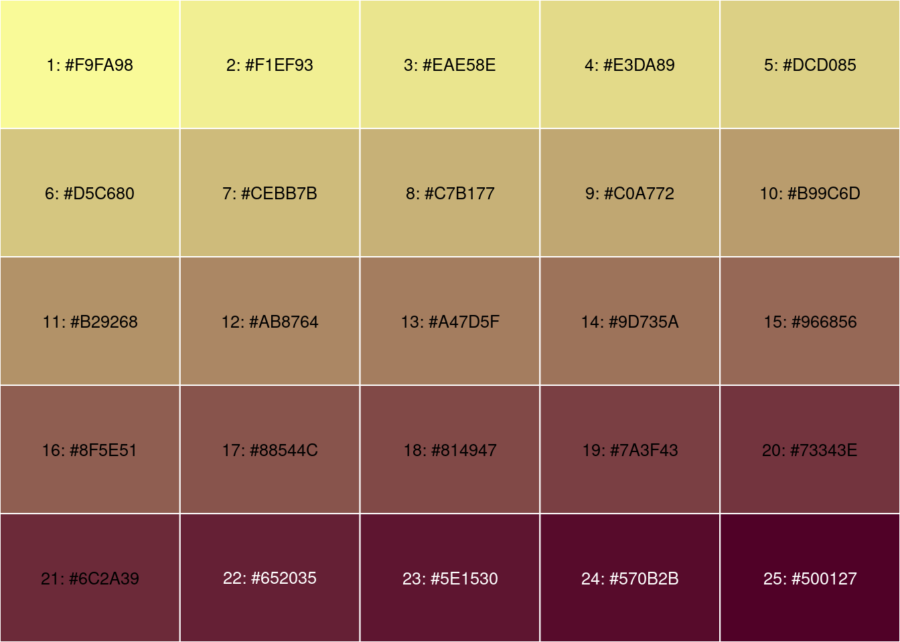
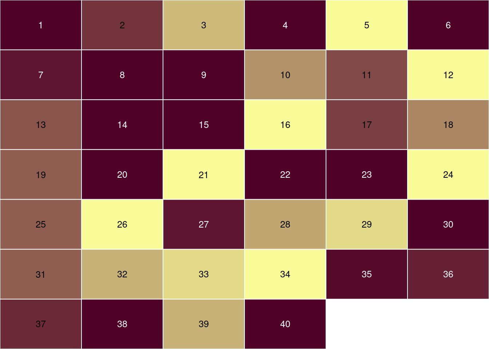

inSilecoMisc 0.4.0 (part 2/2)
April 21, 2020
R package development inSilecoMisc
![](https://img.shields.io/static/v1?style=flat&label=reading%20time&message=7min&color=3fb3b2&logo=)


In the first part of this post I
introduced several functions available in the package inSilecoMisc. In this post, I keep on introducing features of the package you
might find useful! If you did not read the first part of this post and are
interested in reproducing the examples below, simply install inSilecoMisc:
# Run if package is not already installed
install.packages("remotes")
remotes::install_github("inSileco/inSilecoMisc")Load it:
library("inSilecoMisc")
packageVersion("inSilecoMisc")
#R> [1] '0.6.0.9000'and you’re good to go!
scaleWithin()
I wrote scaleWithin() to handle color scales for a specific yet frequent situation. Let us say that I have 40 percentage values – meaning 0 to 100 – in a vector val…
val <- runif(40, 0, 100)
val
#R> [1] 34.4113984 13.4866915 92.8715147 5.3121220 27.1606004 40.8061766
#R> [7] 40.0502665 1.5105773 29.2588300 26.0742980 97.7518917 86.0721554
#R> [13] 54.0564832 92.5243937 29.8968039 99.0029562 46.3874139 8.2526904
#R> [19] 88.8415605 65.2371570 55.6944733 0.5369147 6.6801395 68.7145035
#R> [25] 67.8646429 11.3777416 4.6212113 86.3396509 59.1665323 82.3123295
#R> [31] 22.5999198 16.4362482 26.3740592 54.5466440 71.4963387 47.9352389
#R> [37] 56.9438841 1.6251057 90.2992671 37.0100735… and that I wish to create a color scale with 25 tones. I use showPalette() to show the color palette:
pal <- colorRampPalette(c("#f9fa98", "#500127"))(25)
graphicsutils::showPalette(pal)
But the color scale should be used for the range [30%-70%], meaning that values below 30% should have the lowest values and values above 70%, the highest one. The caption should thus indicate \(\geqslant\) 30% and \(\leqslant\) 70%. Then the function scaleWithin() is very handy!
scaleWithin(val, n = 25, mn = 30, mx = 70)
#R> [1] 3 1 25 1 1 7 7 1 1 1 25 25 16 25 1 25 11 1 25 23 17 1 1 25 24
#R> [26] 1 1 25 19 25 1 1 1 16 25 12 17 1 25 5
graphicsutils::showPalette(pal[scaleWithin(val, n = 25, mn = 30, mx = 70)], add_codecolor = FALSE)
Even though this function is pretty useful – at least I think it is! – I had a
lot of trouble conveying why! So, in the last version of inSilecoMisc, I
re-wrote the entire documentation and I hope that, together with this example,
others will, as I so, find it useful.
Messages
Daily, I use R packages and R functions to analyse data, create
model, run simulations, and a number of other things! So I write scripts that combine functions from
various packages to create pipelines that do the analyses I need. When running
such scripts, I like having information reported on a clear and visual way, that is why I value packages such as
progress, crayon and cli. In
inSilecoMisc, inspired by messages reported by devtools when
building a package, I created four simple message functions using crayon and cli packages to standardize messages in my scripts.
# 1. msgInfo() indicates what the upcoming computation
msgInfo("this is what's gonna happen next")
#R> ℹ this is what's gonna happen next# 2. msgWarning() reminds me something important that should not affect the run
msgWarning("Got to be careful")
#R> ⚠ Got to be careful# 3. msgError() when something went wrong (and I anticipated that it could happen)
msgError("Something wrong")
#R> ✖ Something wrong# 4. msgSuccess() when a step/ a computation has been successfully completed
msgSuccess("All good")
#R> ✔ All goodThese functions help me structure my scripts. Here is a contrived example:
scr_min <- function() {
# msgInfo() lets me know where I am in the script
msgInfo("Average random values")
set.seed(111)
out <- mean(runif(100))
msgSuccess("Done!")
# msgSuccess() indicates the successful completion of this part
out
}
scr_min()
#R> ℹ Average random values
#R> ✔ Done!
#R> [1] 0.4895239Another helpful aspect of these functions is that they all are based on message(). As such, if I want to execute a script quietly, all I need to do is to call suppressMessages() beforehand
# quiet run
suppressMessages(scr_min())
#R> [1] 0.4895239If you want to see an example of how I use these functions in a script for a scientific manuscript, check out the research compendium coocNotInteract.
tblDown()
Last but not least, I’d like to introduce a function to quickly write table data
frame (or a list of data frames) in documents of various formats. I created
tblDown()
for a colleague of mine that was looking for a quick way to export a table. In
the package knitr, there is the very handy function kable()
that quickly writes a data frame in various formats.
knitr::kable(head(CO2))| Plant | Type | Treatment | conc | uptake |
|---|---|---|---|---|
| Qn1 | Quebec | nonchilled | 95 | 16.0 |
| Qn1 | Quebec | nonchilled | 175 | 30.4 |
| Qn1 | Quebec | nonchilled | 250 | 34.8 |
| Qn1 | Quebec | nonchilled | 350 | 37.2 |
| Qn1 | Quebec | nonchilled | 500 | 35.3 |
| Qn1 | Quebec | nonchilled | 675 | 39.2 |
I wrote a function that calls kable() to write the data frame
and then renders the table(s) in the
desired format indicated by the extension of the output file (docx by
default) using pandoc.
# NB tblDown(head(CO2)) returns table.docx by default
tblDown(head(CO2), output_file = "table.odt")
As I mentioned above tblDown() handles lists of data frames and the user can also provide a set of captions for every table and even separate them with section headers (of level 1).
tblDown(list(head(CO2), tail(CO2)), output_file = "tables.pdf",
caption = c("This is the head of CO2", "This is the tail of CO2"),
section = "Table")Check out the output file ➡ ! Note that in the example above I only use one
character string for section and tblDown() has appended an index; this is
also the default behavior for caption: if there are less captions
or sections titles than data frames, vectors of captions (and/or sections) are repeated and an index is appended.
If you are already writing your documents with R
Markdown, you may not need this. Yet keep in mind that
tblDown() quickly exports tables in various formats with only one line of
command!
That’s all folks 🎉!
Session info
sessionInfo()
#R> R version 4.0.5 (2021-03-31)
#R> Platform: x86_64-pc-linux-gnu (64-bit)
#R> Running under: Ubuntu 20.04 LTS
#R>
#R> Matrix products: default
#R> BLAS/LAPACK: /usr/lib/x86_64-linux-gnu/openblas-pthread/libopenblasp-r0.3.8.so
#R>
#R> locale:
#R> [1] LC_CTYPE=en_US.UTF-8 LC_NUMERIC=C
#R> [3] LC_TIME=en_US.UTF-8 LC_COLLATE=en_US.UTF-8
#R> [5] LC_MONETARY=en_US.UTF-8 LC_MESSAGES=C
#R> [7] LC_PAPER=en_US.UTF-8 LC_NAME=C
#R> [9] LC_ADDRESS=C LC_TELEPHONE=C
#R> [11] LC_MEASUREMENT=en_US.UTF-8 LC_IDENTIFICATION=C
#R>
#R> attached base packages:
#R> [1] stats graphics grDevices datasets utils methods base
#R>
#R> other attached packages:
#R> [1] inSilecoMisc_0.6.0.9000 inSilecoRef_0.0.1.9000
#R>
#R> loaded via a namespace (and not attached):
#R> [1] tidyselect_1.1.0 xfun_0.22 bslib_0.2.4
#R> [4] purrr_0.3.4 generics_0.1.0 vctrs_0.3.7
#R> [7] miniUI_0.1.1.1 htmltools_0.5.1.1 yaml_2.2.1
#R> [10] utf8_1.2.1 rlang_0.4.10 jquerylib_0.1.3
#R> [13] later_1.1.0.1 pillar_1.5.1 glue_1.4.2
#R> [16] httpcode_0.3.0 DBI_1.1.1 lifecycle_1.0.0
#R> [19] plyr_1.8.6 stringr_1.4.0 blogdown_1.2
#R> [22] htmlwidgets_1.5.3 evaluate_0.14 knitr_1.31
#R> [25] fastmap_1.1.0 httpuv_1.5.5 curl_4.3
#R> [28] fansi_0.4.2 highr_0.8 Rcpp_1.0.6
#R> [31] xtable_1.8-4 renv_0.13.2 promises_1.2.0.1
#R> [34] DT_0.17 jsonlite_1.7.2 rcrossref_1.1.0
#R> [37] mime_0.10 digest_0.6.27 stringi_1.5.3
#R> [40] bookdown_0.21.7 dplyr_1.0.5 shiny_1.6.0
#R> [43] cli_2.4.0 tools_4.0.5 graphicsutils_1.6.0.9000
#R> [46] magrittr_2.0.1 sass_0.3.1 tibble_3.1.0
#R> [49] RefManageR_1.3.0 crul_1.1.0 crayon_1.4.1
#R> [52] pkgconfig_2.0.3 ellipsis_0.3.1 xml2_1.3.2
#R> [55] lubridate_1.7.10 rstudioapi_0.13 assertthat_0.2.1
#R> [58] rmarkdown_2.7 httr_1.4.2 R6_2.5.0
#R> [61] compiler_4.0.5